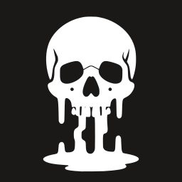
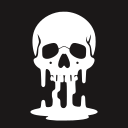
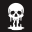
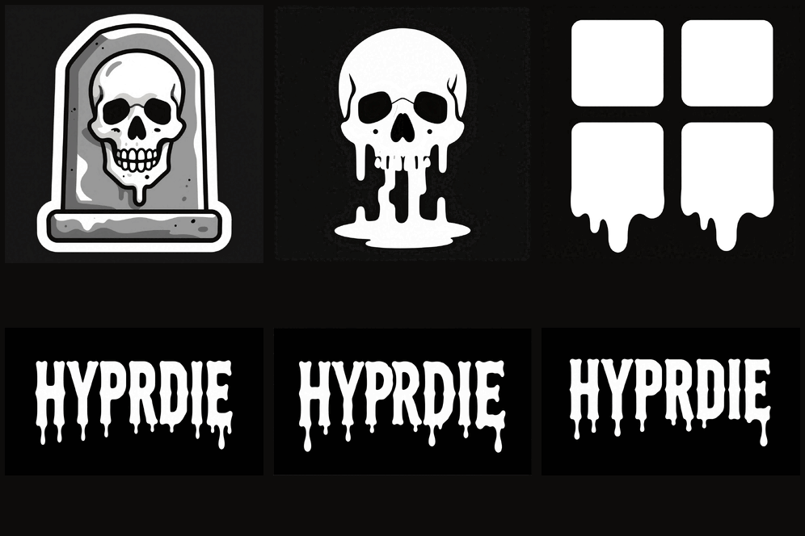

The images the project ships live in ../assets/. This folder is the
design record behind them: where each came from, what was rejected, and why.
Nothing here is needed to build or install hyprdie.
assets/icon.svg is a trace of melting/E-skull-s2.svg placed in a
squircle. It holds up because it is a solid filled silhouette. A trace of line art
from the same pipeline does not — its hairlines fall below a pixel and drop out.

256
128
32| Asset | Derived from | Prompt / seed |
|---|---|---|
| hero.png, background.png | sources/A-tomb-s2.png | A-tomb, seed 2 |
| wordmark-transparent{,-inverted}.png | sources/SP4-s3.png | SP4, seed 3 |
| icon.svg | melting/E-skull-s2.svg | E-skull, seed 2, traced |
Full prompt text for every batch is in melting/PROMPTS.txt; the contact sheet of raw renders is melting/concepts.png. sources/SP4-s3-pinta-edit.png is a hand-edited version — the reference the generated wordmark was matched to.

Drawn first, none chosen. mark-power was the most legible but the most
generic; mark-power-frame read as a plug or socket. They are on the archive
branch, not here.
Drawn to pair with the render at icon size. It did not hold up and was deleted.
A mistake. It is a shaded illustration — 11,404 colours: white, four greys and near-black. Tracing collapsed it to two and threw away the stone texture, interior linework and teeth, which is the whole reason it looks good. Raster was right.
8 of 8 uppercase HYPRDIE seeds spelled correctly. In the lowercase batch
only 1 of 4 did — the model produced hyrdie, hypdie and
hypde, and twice duplicated the word. Use caps for generated type.
Bridge the gaps between text, skulls and splatter into one region (closing radius 60), fill the interior, then dilate a uniform 26px. Pad the canvas first: the leftmost ink sat 34px from the edge while the bridging reach is 60 + 26, so the dilation ran off the canvas and got pinned to the border.
Below a closing radius of 45 the plate is only connected by filaments too faint to see. Eroding the finished mask by 5px and checking it stays one piece is the test that catches it — and it is why 30 was rejected and 60 chosen.
potracer treats low values as foreground, so the mask must be complemented or
it traces the background. And all curves must be subpaths of one <path>,
or fill-rule cannot punch the counters out of P,
R and D.
# check or export the icon rsvg-convert -w 512 assets/icon.svg -o icon-512.png
{kind=link}
{kind=link}
{kind=link}
{kind=link}
{kind=link}
{kind=link}
{kind=link}
{kind=link}
{kind=link}